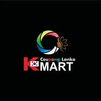

Founder & CEO
MESSIORA Global
Leading a team of engineers and designers building reliable digital products that help businesses grow and transform markets.
I’m Sankalpa—Founder & CEO of MESSIORA, software engineer, cybersecurity specialist, and researcher. I connect engineering precision with business thinking to build high-quality digital products that improve and transform markets.
I’m an engineer and entrepreneur working at the intersection of software, security, research, and business growth.
As Founder & CEO of MESSIORA, I lead the development of digital products with a strong focus on design, performance, and real-world impact. My academic foundation spans a First Class Honours degree in Computer Science, a batch-leading postgraduate qualification in cybersecurity from Singapore, and current R&D in software and forest engineering in South Korea.
Living and studying in South Korea has shaped how I communicate and solve problems across cultures. Whether I’m building an application, strengthening a system, or leading a product vision, I bring the same approach: understand deeply, build deliberately, and create measurable value.
Entrepreneurship, engineering, and education across Sri Lanka, Singapore, and South Korea.
Leading a team of engineers and designers building reliable digital products that help businesses grow and transform markets.
Researching software engineering, emerging technology, and advanced algorithms.
Completed university Level 5 and developed professional cross-cultural communication skills.
Class topper, focused on cryptography, network defence, and ethical hacking.
First Class Honours, specialising in software engineering and system architecture.
Selected digital products delivered through MESSIORA—from customer-facing platforms to operational business systems.
An educational platform connecting students with global study opportunities.
A hospitality website featuring the cafe menu and streamlined online reservations.

A complete point-of-sale system for Coupang Lanka Korean Mart, designed to support efficient sales and retail operations.
A mobile marketplace application created for Easy Auto to make buying and selling vehicles simpler.
Thoughtful, maintainable digital products shaped around real user and business needs.
Security-aware thinking across applications, networks, architecture, and everyday decisions.
Clear positioning and practical marketing systems that help good businesses reach more people.
Structured investigation that turns emerging ideas and complex information into useful insight.
Have an idea worth building?
For software, research, consulting, and collaboration enquiries, connect with me through MESSIORA.
Contact via MESSIORA